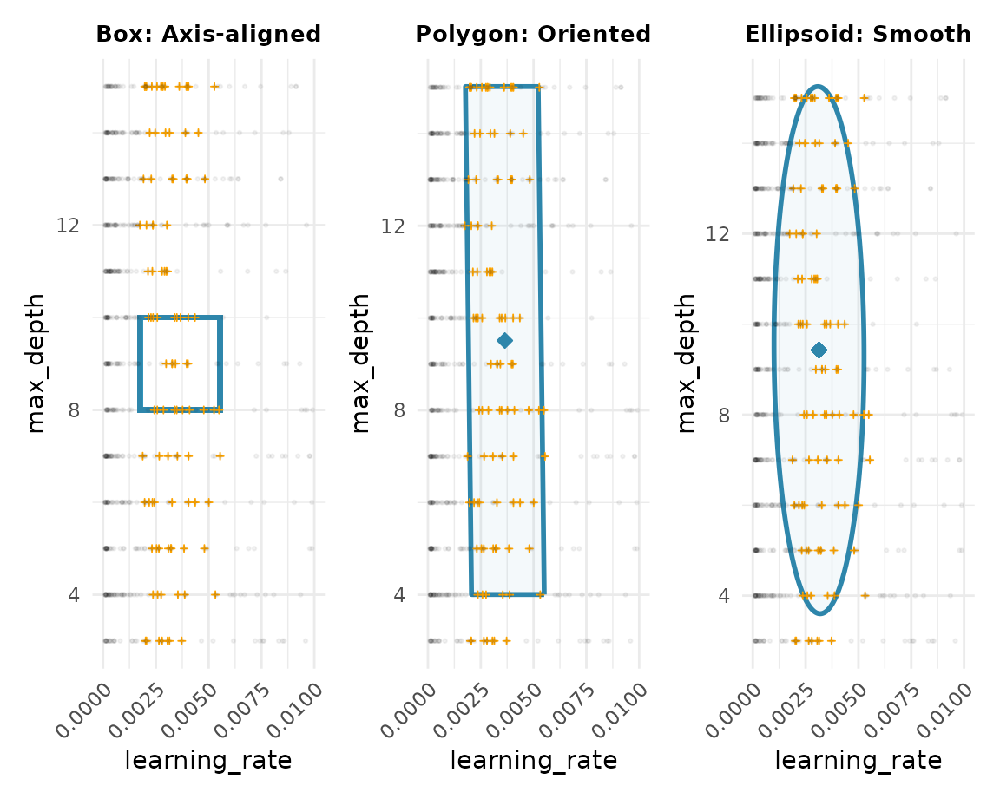

Comparing Subspace Learners
learner-comparison.Rmd
library(spacefinder)
library(data.table)
library(ggplot2)
data("benchmark_data", package = "spacefinder")Introduction
The spacefinder package offers three learner types that
differ in how they represent promising hyperparameter regions:
- Box: Axis-aligned hyperrectangles (simple bounds per hyperparameter)
- Polygon: Oriented hyperrectangles (can rotate to capture correlations)
- Ellipsoid: Ellipsoids (smooth, curved boundaries)
Let’s see how they compare on the same data.
Training All Three Learners
# Create task
task <- TaskSubspace$new(
data = benchmark_data,
target_measure = "auc",
hps = c("learning_rate", "max_depth")
)
# Train all three learners with identical settings
learner_box <- LearnerSubspaceBox$new(task)
learner_box$train(q_val = 0.9, lambda = 0.1)
learner_polygon <- LearnerSubspacePolygon$new(task)
learner_polygon$train(q_val = 0.9, lambda = 0.1)
learner_ellipsoid <- LearnerSubspaceEllipsoid$new(task)
learner_ellipsoid$train(q_val = 0.9, lambda = 0.1)Visual Comparison
The best way to understand the differences is to visualize them:
p_box <- autoplot(learner_box) +
ggtitle("Box: Axis-aligned") +
scale_x_continuous(limits = c(0, 0.01), breaks = seq(0, 0.01, by = 0.0025), guide = guide_axis(angle = 45)) +
theme(plot.title = element_text(hjust = 0.5, face = "bold", size = 10))
p_polygon <- autoplot(learner_polygon) +
ggtitle("Polygon: Oriented") +
scale_x_continuous(limits = c(0, 0.01), breaks = seq(0, 0.01, by = 0.0025), guide = guide_axis(angle = 45)) +
theme(plot.title = element_text(hjust = 0.5, face = "bold", size = 10))
p_ellipsoid <- autoplot(learner_ellipsoid) +
ggtitle("Ellipsoid: Smooth") +
scale_x_continuous(limits = c(0, 0.01), breaks = seq(0, 0.01, by = 0.0025), guide = guide_axis(angle = 45)) +
theme(plot.title = element_text(hjust = 0.5, face = "bold", size = 10))
# Combine plots
patchwork::wrap_plots(p_box, p_polygon, p_ellipsoid, ncol = 3)
Key differences:
- Box: Simple rectangle aligned with axes - easiest to interpret
- Polygon: Can rotate to better fit the data - captures diagonal patterns
- Ellipsoid: Smooth curved boundary - most flexible fit
Coefficients
Box: Simple Bounds
coef(learner_box)
#> Index: <hyperparameter>
#> hyperparameter min max
#> <char> <num> <num>
#> 1: learning_rate 0.001746408 0.005541915
#> 2: max_depth 8.000000000 10.000017952Box learners give you direct bounds: “use learning_rate between X and Y”.
Polygon and Ellipsoid: Transformation Matrices
# Polygon
coef(learner_polygon)
#> hyperparameters A
#> <list> <list>
#> 1: learning_rate,max_depth 581.10374783, 0.01510349, 0.01510349, 0.18162525
#> b
#> <list>
#> 1: -2.259721,-1.727565
# Ellipsoid
coef(learner_ellipsoid)
#> hyperparameters A
#> <list> <list>
#> 1: learning_rate,max_depth 4.693968e+02,4.370045e-03,4.370045e-03,1.716406e-01
#> b
#> <list>
#> 1: -1.512929,-1.618121Polygon and Ellipsoid use transformation matrices A and b. These are harder to interpret but allow more flexible shapes.
Outliers
cat("Outliers identified:\n")
#> Outliers identified:
cat(" Box:", nrow(outliers(learner_box)), "\n")
#> Box: 75
cat(" Polygon:", nrow(suppressMessages(outliers(learner_polygon))), "\n")
#> Polygon: 100
cat(" Ellipsoid:", nrow(suppressMessages(outliers(learner_ellipsoid))), "\n")
#> Ellipsoid: 23Different learners may identify different configurations as outliers based on their geometry.
Next Steps
-
vignette("density-estimation"): Add probabilistic density withaugment() -
vignette("categorical-hyperparameters"): Handle categorical variables
sessionInfo()
#> R version 4.5.2 (2025-10-31)
#> Platform: x86_64-pc-linux-gnu
#> Running under: Ubuntu 24.04.3 LTS
#>
#> Matrix products: default
#> BLAS: /usr/lib/x86_64-linux-gnu/openblas-pthread/libblas.so.3
#> LAPACK: /usr/lib/x86_64-linux-gnu/openblas-pthread/libopenblasp-r0.3.26.so; LAPACK version 3.12.0
#>
#> locale:
#> [1] LC_CTYPE=C.UTF-8 LC_NUMERIC=C LC_TIME=C.UTF-8
#> [4] LC_COLLATE=C.UTF-8 LC_MONETARY=C.UTF-8 LC_MESSAGES=C.UTF-8
#> [7] LC_PAPER=C.UTF-8 LC_NAME=C LC_ADDRESS=C
#> [10] LC_TELEPHONE=C LC_MEASUREMENT=C.UTF-8 LC_IDENTIFICATION=C
#>
#> time zone: UTC
#> tzcode source: system (glibc)
#>
#> attached base packages:
#> [1] stats graphics grDevices utils datasets methods base
#>
#> other attached packages:
#> [1] ggplot2_4.0.1 data.table_1.17.8 spacefinder_0.2.1.0000
#>
#> loaded via a namespace (and not attached):
#> [1] Matrix_1.7-4 bit_4.6.0 gtable_0.3.6 jsonlite_2.0.0
#> [5] Rmpfr_1.1-2 compiler_4.5.2 Rcpp_1.1.0 jquerylib_0.1.4
#> [9] systemfonts_1.3.1 scales_1.4.0 textshaping_1.0.4 yaml_2.3.11
#> [13] fastmap_1.2.0 lattice_0.22-7 R6_2.6.1 labeling_0.4.3
#> [17] patchwork_1.3.2 generics_0.1.4 knitr_1.50 backports_1.5.0
#> [21] checkmate_2.3.3 desc_1.4.3 bslib_0.9.0 RColorBrewer_1.1-3
#> [25] rlang_1.1.6 cachem_1.1.0 CVXR_1.0-15 xfun_0.54
#> [29] S7_0.2.1 fs_1.6.6 sass_0.4.10 bit64_4.6.0-1
#> [33] cli_3.6.5 withr_3.0.2 pkgdown_2.2.0 digest_0.6.39
#> [37] grid_4.5.2 gmp_0.7-5 lifecycle_1.0.4 ECOSolveR_0.5.5
#> [41] scs_3.2.7 vctrs_0.6.5 evaluate_1.0.5 glue_1.8.0
#> [45] farver_2.1.2 ragg_1.5.0 rmarkdown_2.30 tools_4.5.2
#> [49] htmltools_0.5.9